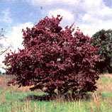

The nation's oldest nonprofit conservation organization, American Forests, has for 87 of its 125 years researched and documented trees with historic significance. In 1976 it began actively propagating some of its more noteworthy finds and selling the offspring through twice - yearly catalogs, both to raise awareness of these "silent witnesses" to history and to help support an array of preservation and reforestation projects. American Forests plants millions of trees annually in habitats ravaged by fire, natural disaster or clear-cutting.
Now, as part of its Global ReLeaf 2000 initiative, the organization aims to plant 20 million trees for the new millennium. Accordingly, it has launched an election-year campaign of its own, urging consumers to cast "a vote for the future" by purchasing and planting a presidential tree. Among its offerings are Gettysburg Address honey locusts, Andrew Jackson Southern magnolias, Franklin D. Roosevelt redbuds and John F. Kennedy post oaks.
For those who prefer more apolitical plantings, American Forests also offers such wellborn trees as Johnny Appleseed rambo apples, Clara Barton redbuds, Walden Woods red maples and, direct from Graceland, Elvis Presley weeping willows. Each catalog features more than 40 selections, all grown from hand-picked seed. Thirty percent of the purchase price (most trees cost $35) goes to support Global ReLeaf efforts.
For more information, call (800) 320-TREE or visit the Web at www.americanforests.org .
-Marguerite Lamb
|
 Civil War-era Harpers Ferry dogwood |
Patrick Henry Osage orange |
|